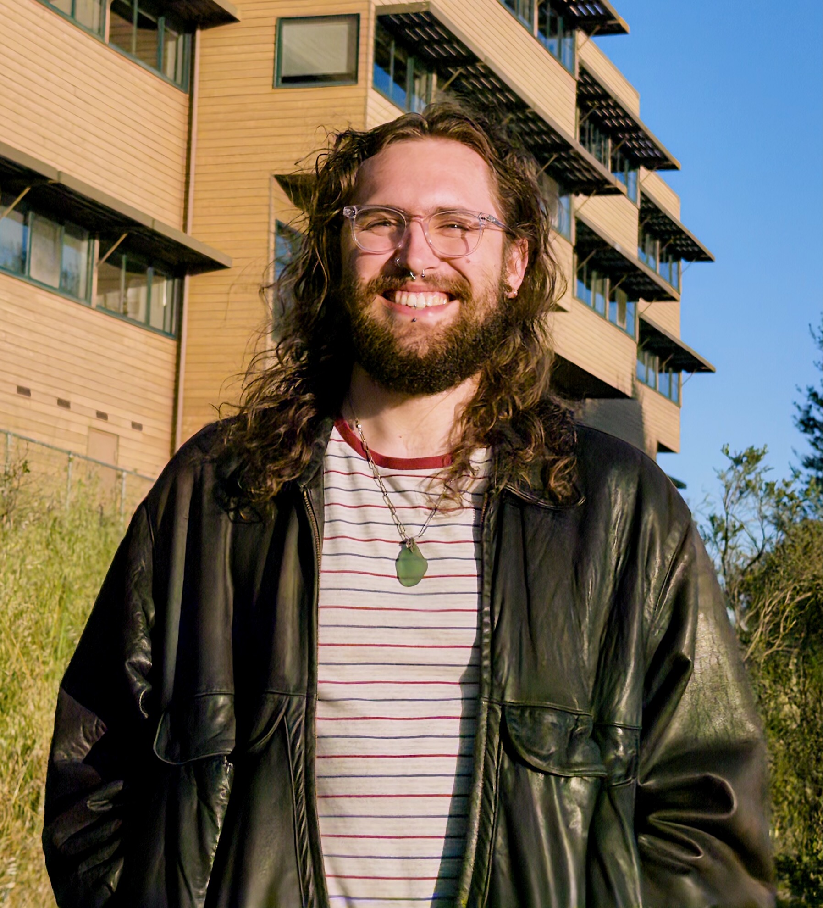

I am a graduate student at Washington University in Saint Louis working under Steven Frankel. When I am not playing with my cats, I tend to think about Cannon-Thurston Maps, flows, free-by-cyclic groups, and wiggly circles.
During my Master’s at Cal Poly SLO, I worked with Ryan Tully-Doyle. You can read more about my thesis here.
I am currently on the job market for postdoctoral positions starting fall 2027.
Where you might have seen me:
- AMS Fall Sectional, Univ of Minnesota at Duluth, October 2025
- SLMath Recent Progress in Topological and Geometric Structures in Low Dimensions, Berkeley CA, January - May 2026
- AMS Fall Sectional, Saint Louis Univeristy, September 2025
- AMS Sping Sectional, Cal Poly SLO, May 2025
- The St. Louis Topology Conference, May 2024